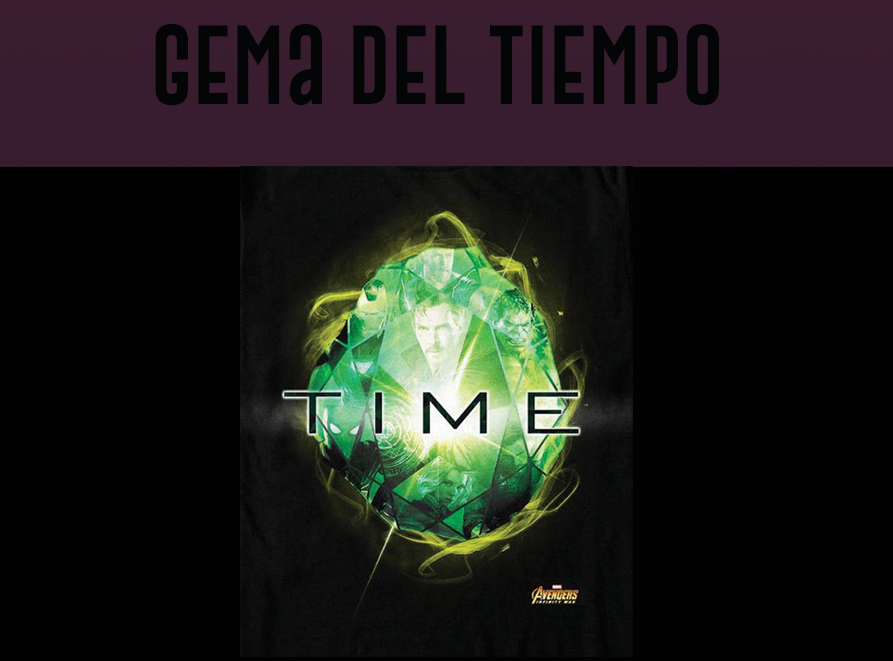
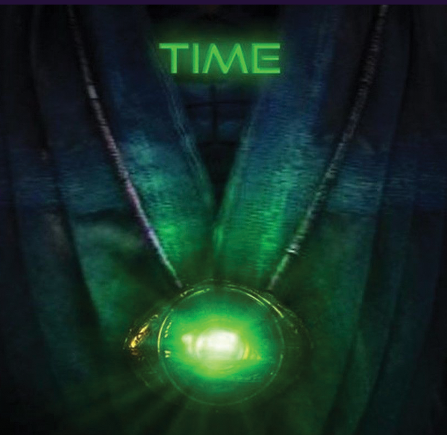

|  |
Color: verde Unidad de contención original: Ojo de Agamotto Contenida en el Ojo de Agamotto, la Gema del Tiempo fue contenida aquí por Agamotto hace miles de años atrás. Esta tenía la peculiaridad de controlar el tiempo a voluntad, atrasándolo, adelantándolo, ver posibles futuros y crear bucles temporales, fracturas o variaciones. Después de haber estado almacenado durante un tiempo desconocido en un pedestal en Kamar-Taj, recientemente fue utilizado por el Doctor Stephen Strange, primero para ayudarlo en su aprendizaje con la hechicería, y luego en su lucha final contra Kaecilius y Dormammu. Wong y Karl Mordo notaron que el uso del Ojo de Agamotto era contrario al orden natural de las cosas y extremadamente peligroso. Con la aprobación de Wong, Strange volvió a colocarlo en su pedestal hasta que aprendió cómo aprovechar sus poderes. Strange lo usó una vez más mientras se encontraba con Thor y Loki. Después, Strange se vio obligado a darle la Gema del Tiempo a Thanos para salvar la vida de Stark. Al adquirir la gema, Thanos la inserta en su Guantelete del Infinito, para después poder chasquear sus dedos. Apareció por primera vez en Doctor Strange |
|  |